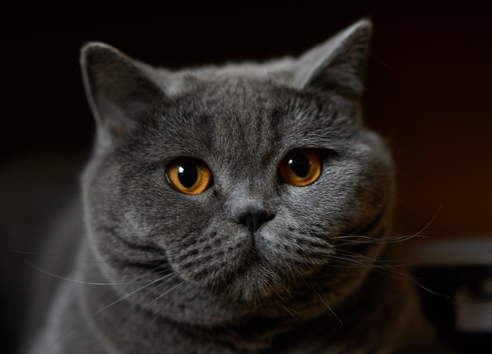

Hei, olen Jon ja opiskelen Laureassa Amk-tutkintoa. Minä pidän kissoista,ja omistan Brittiläisen kissan, joka on 17-vuotias.
,jos olet kiinnostunut juuri tästä rodusta,niin suosittelen vilkaisemaan linkin taakse.
